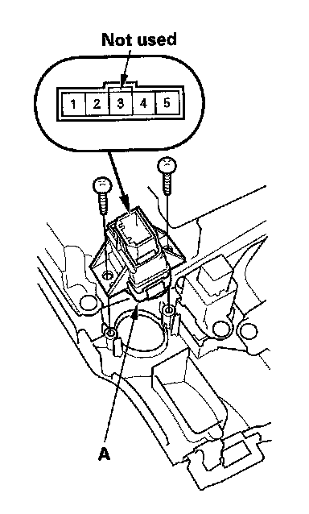
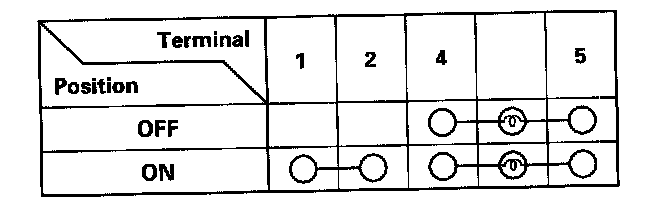
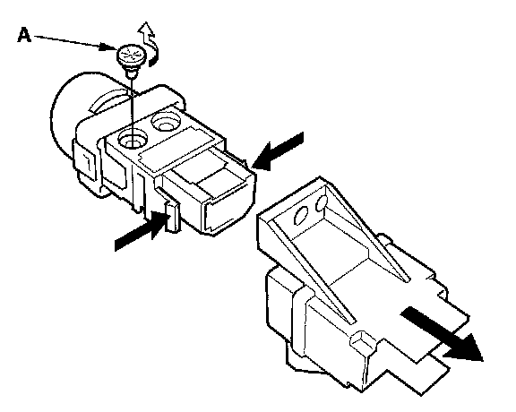

Hazard Warning Lamps: Service and Repair
Hazard Warning Switch Test/Replacement1. Remove the center panel.
- With Audio
- With Navigation

2. Remove the screws and the hazard warning switch (A).

3. Check for continuity between the terminals in each switch position according to the table.

4. If the continuity is not as specified, replace the bulb (A) or the hazard warning switch.